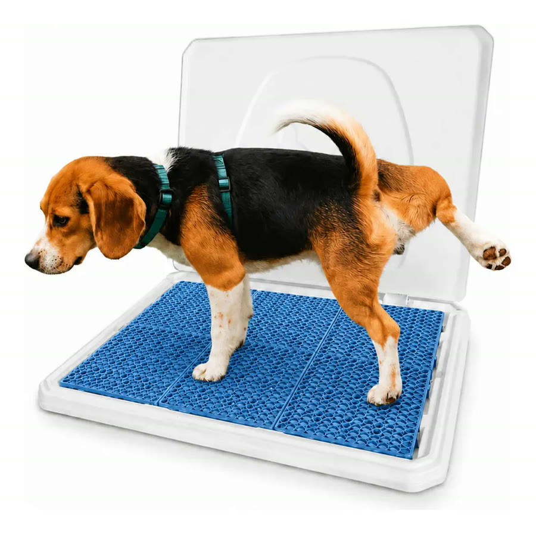
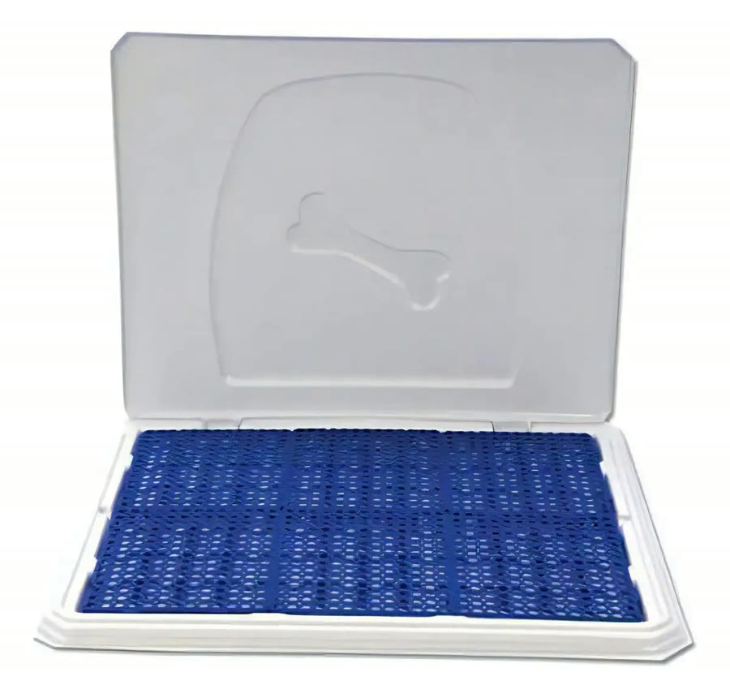
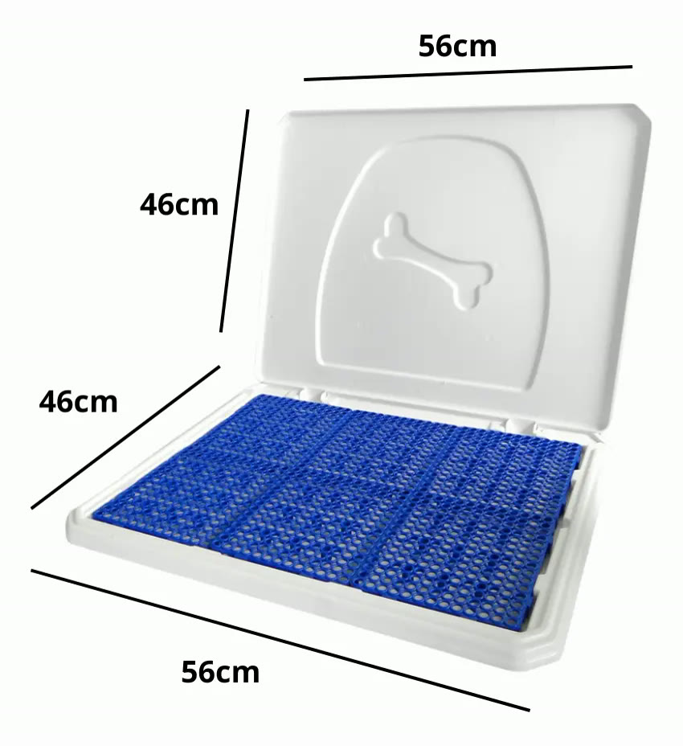
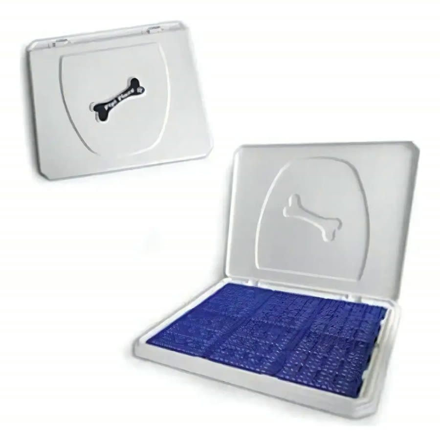
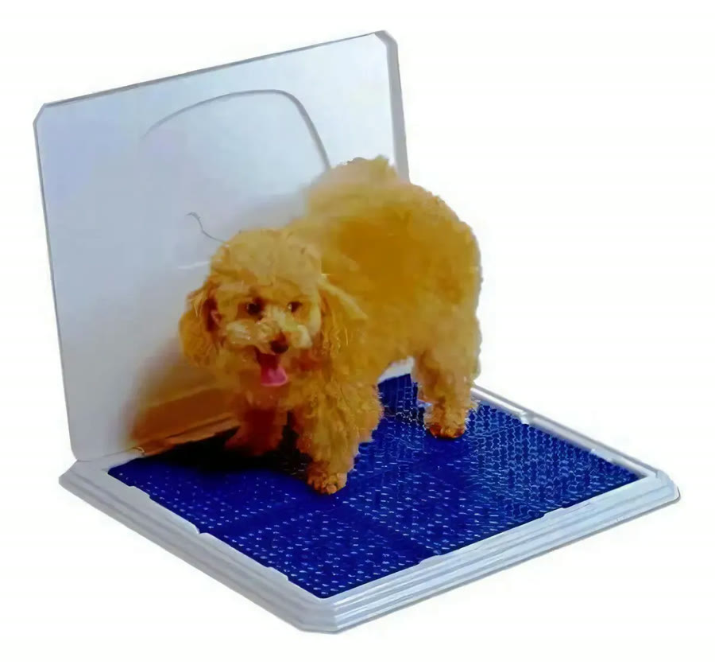

Achado nº 103
Limpar xixi do cachorro na quina da parede?
Sanitário canino com grade e parede para cão macho
★ 4,7 · quase 200 avaliações no Mercado Livre





O que diz a página oficial do produto
- É um sanitário de plástico para cachorro: uma bandeja com grade azul por cima e uma tampa erguida que funciona como parede
- Segundo o anúncio, é feito para cão macho, que levanta a pata e faz xixi na parede, e a urina escorre para a bandeja
- Segundo o anúncio, a urina passa pela grade e fica na bandeja, e o cão não molha as patas
- As grades saem e podem ser lavadas
- Segundo o anúncio, dá para abrir em cima de um ralo para escoar a urina
- Mede 56 x 46 cm
- No Mercado Livre, tem nota 4,7 com quase 200 avaliações e mais de mil vendidos
Link de afiliado: se você comprar por ele, a Achadaria pode receber uma comissão, sem custo extra para você. Preço, estoque e entrega são da loja e podem mudar; confira lá antes de comprar.